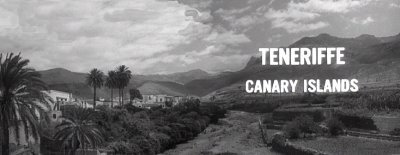
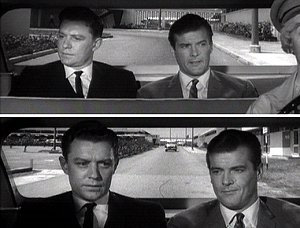
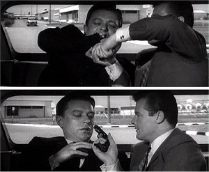
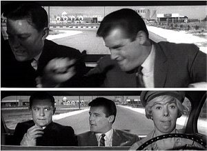
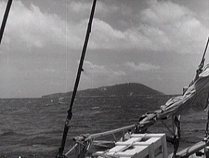
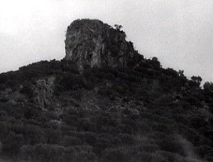
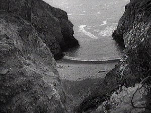

|
|
HELP FIND THE FOLLOWING LOCATIONS
PAGE 95THE SAINT: The Saint Bids Diamonds (Leslie Norman, April/May 1965)
Unknown 1: The Saint is on Tenerife intent on recovering a stolen diamond.

Unknown 2: Posing as Graner’s man, Simon Templar kidnaps George Felson at the airport with Madame Calliope’s help. Only as they drive away from the airport does Felson become suspicious.



Unknown 3: Christine Graner and Simon stop for drink in local hotel.

THE SAINT: The Old Treasure Story (Roger Moore, May/June 1965)
English Harbour, Antigua, Antigua and Barbuda: Duncan Rawl’s yacht waits at the dock for the other treasure hunters to arrive.
Identified by Philip Doyle, Sepember 2020

Antigua, Antigua and Barbuda: Rawl’s yacht sets out to Corda Cay.

Unknown 1: From Rawl’s yacht, the treasure hunters spot Corda Cay for the first time.

Unknown 2: Rawl suspects that the rock above the bay is “the table top” mentioned in Blackbeard’s.

Unknown 3: After a night on the island the treasure hunters prepare to enter the cave.

Think you know a spot? Need a bigger image? Email me.
< Previous | Index | Avengerland | Next >
Copyright © 2021 Anthony R. McKay